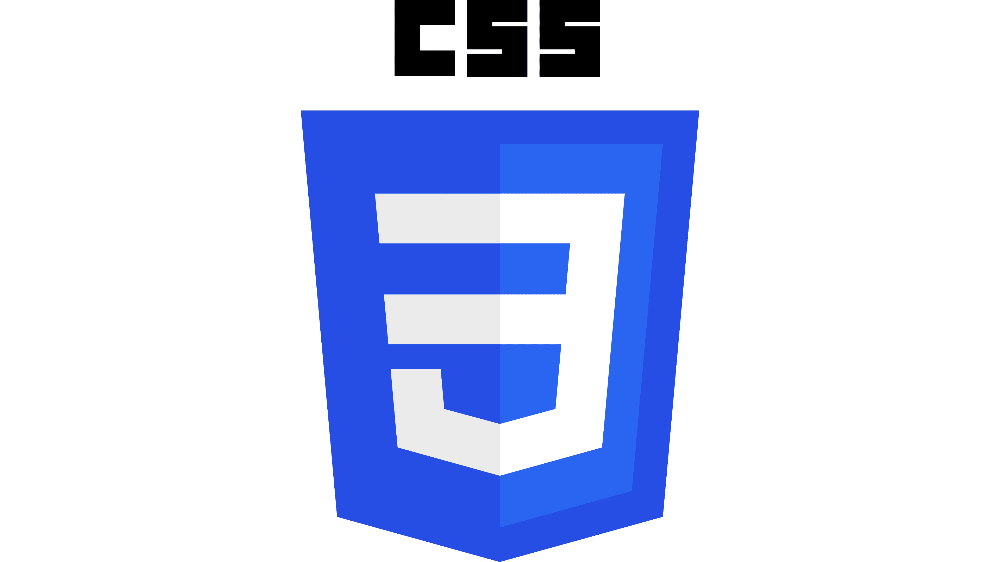

WEB DEVELOPMENT
Web development adalah proses pembuatan dan pemeliharaan situs web. Ini
mencakup berbagai aspek seperti desain web, pengembangan konten,
pemrograman sisi klien/server, dan keamanan jaringan. Pengembangan web
dapat dibagi menjadi dua kategori utama: front-end dan back-end.
Front-end berfokus pada elemen visual dan interaktif yang dilihat
pengguna, sementara back-end menangani logika dan database di belakang
layar. Web development penting untuk menciptakan pengalaman pengguna
yang efektif dan menarik di dunia digital.
HTML (HyperText Markup Language) adalah bahasa yang digunakan untuk
membuat struktur dasar halaman web. HTML menggunakan tag untuk
menentukan elemen seperti teks, gambar, dan tautan. HTML merupakan
fondasi dari semua situs web dan bekerja bersama dengan CSS dan
JavaScript untuk membuat halaman lebih menarik dan interaktif.
CSS (Cascading Style Sheets) adalah bahasa yang digunakan untuk
mengatur tampilan dan tata letak halaman web. CSS mengontrol elemen
seperti warna, font, dan spasi, sehingga halaman web menjadi lebih
menarik dan konsisten. CSS bekerja bersama dengan HTML untuk
memberikan gaya visual pada konten yang dibuat.

JavaScript adalah bahasa pemrograman yang digunakan untuk membuat
halaman web lebih interaktif dan dinamis. JavaScript memungkinkan
elemen pada halaman web, seperti tombol dan formulir, untuk merespons
tindakan pengguna. Ini bekerja bersama HTML dan CSS untuk memberikan
fungsionalitas tambahan pada situs web.